儿童科普绘本 · 适合 3-8 岁小朋友
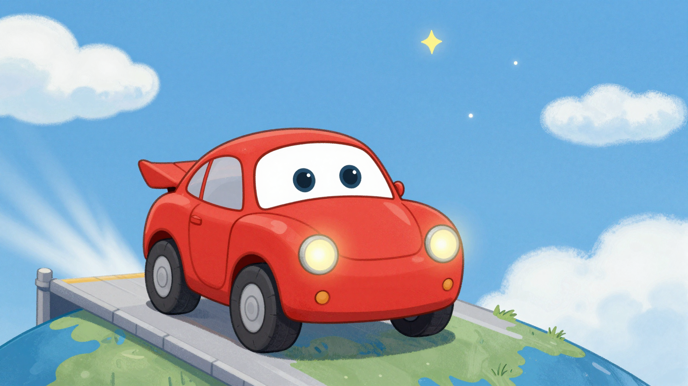
在遥远的未来，有一个叫"小火"的小汽车机器人。它有着圆圆的车轮和闪亮的红色外壳，就像火星一样红彤彤的！小火最喜欢的事情就是探险，它梦想着去一个神秘的地方——火星！
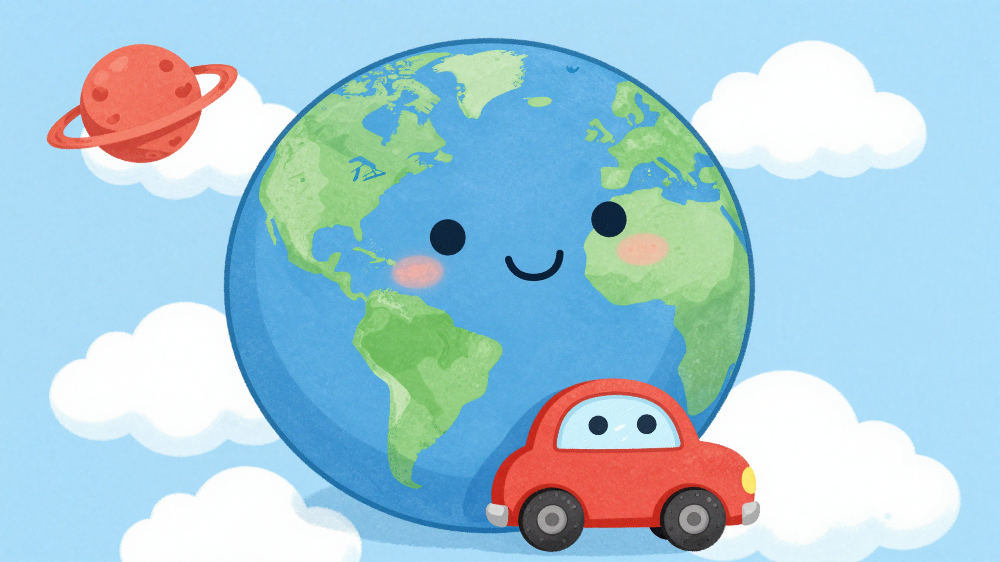
"妈妈，火星是什么样子的呀？"小火问地球妈妈。
地球妈妈温柔地说："火星是太阳系里第四颗行星，它穿着一件红色的外衣，因为它的土地上有很多很多红色的石头，叫做'氧化铁'，就像铁生锈了一样。"
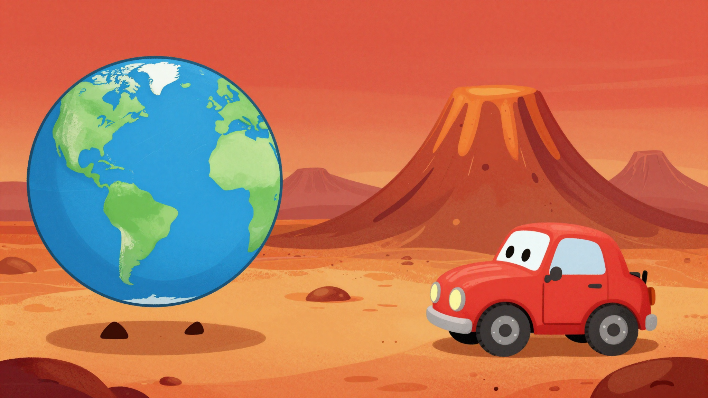
"火星比地球小一半哦，"地球妈妈继续说，"那里很冷很冷，空气也很稀薄。但是那里有太阳系里最高的山——奥林匹斯山，还有最长的峡谷——水手号峡谷！"
小火听得眼睛都亮了："哇！我一定要去看看！"
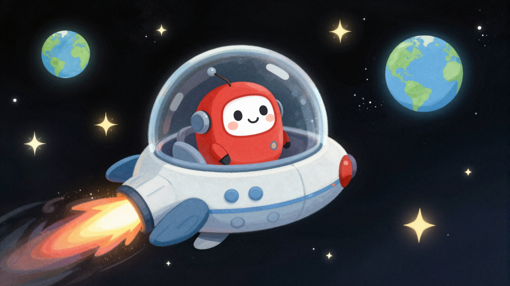
终于，出发的日子到了！小火坐上了宇宙飞船，"轰隆隆——"飞船飞向了太空。
透过窗户，小火看到了好多星星，还有月亮姐姐在向它招手。"再见，地球！再见，妈妈！我会勇敢地完成探险任务的！"
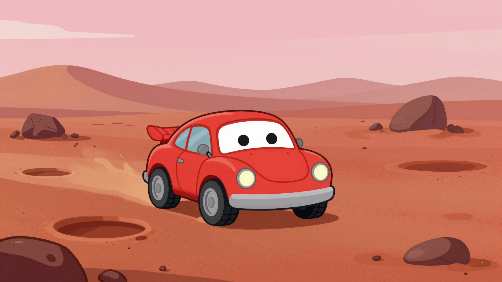
经过漫长的旅行，小火终于来到了火星！
"哇——"小火惊叹道。火星的天空是粉红色的，地面是橘红色的，到处都是圆圆的坑坑洼洼，那是小行星撞击留下的痕迹。
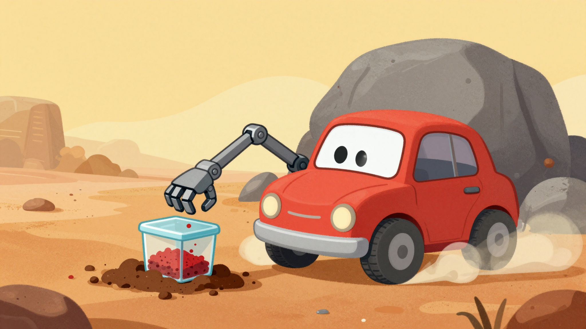
小火开始工作了！它伸出机械手臂，采集红色的土壤样本。
"这里的土壤真的含有氧化铁呢！"小火开心地说，"难怪火星看起来这么红！"
突然，一阵沙尘暴来了！小火赶紧躲到一块大石头后面。
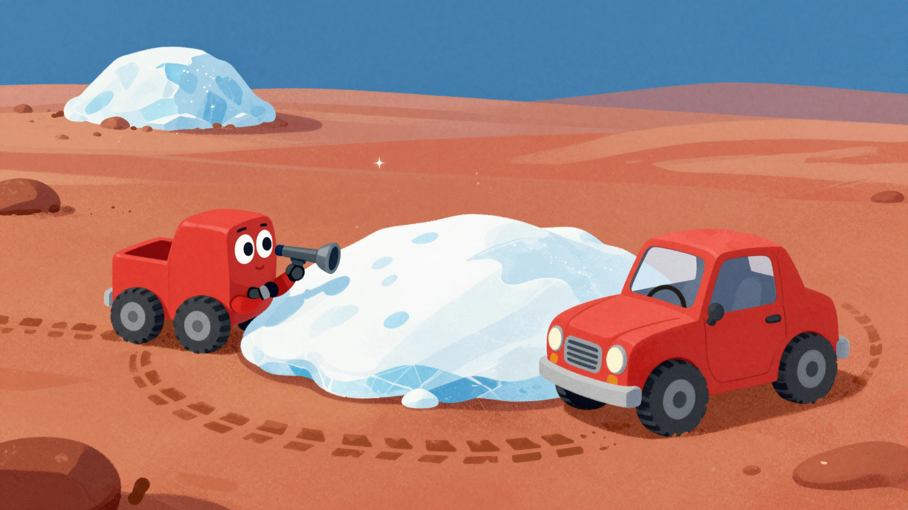
沙尘暴过后，小火继续前进。它发现了一个神奇的东西——冰！
"太棒了！火星上有水冰！"小火兴奋地说，"科学家说火星的两极和地下藏着好多水冰呢！"
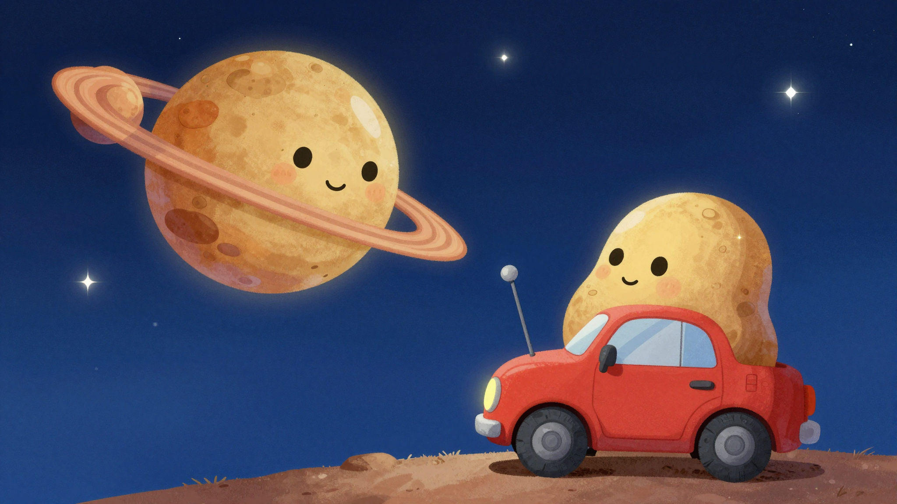
小火继续探险，它看到了两个小小的月亮在天空中闪烁。
"那是火卫一和火卫二！"小火说，"它们是火星的两个小卫星，形状不太规则，可能是被火星抓住的小行星呢！"
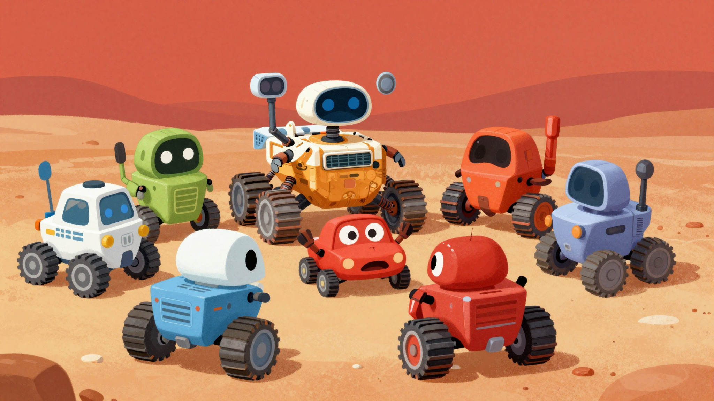
小火遇到了它的前辈们！好奇号、勇气号、机遇号……它们都是来火星探险的火星车。
"欢迎加入火星探险队！"好奇号说，"我们一起探索这个神秘的红色星球吧！"
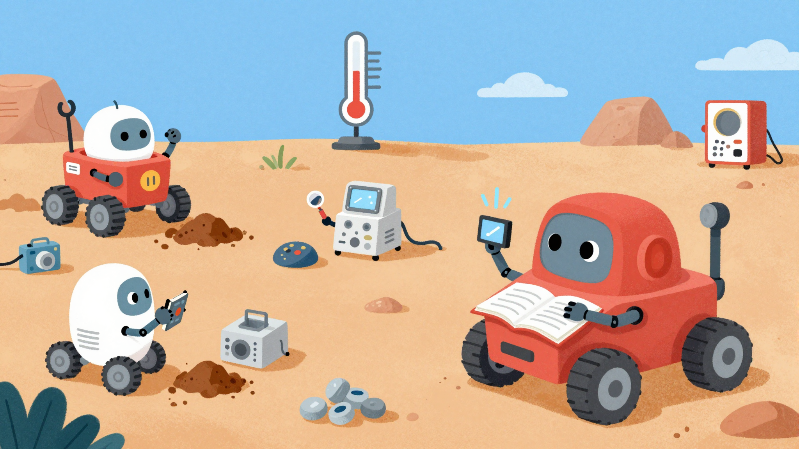
小火和前辈们一起工作，它们测量温度、分析土壤、拍摄照片……
"火星的大气主要是二氧化碳，"小火记录着，"这里很冷，没有稳定的液态水。但是，也许有一天，人类可以来这里做客呢！"
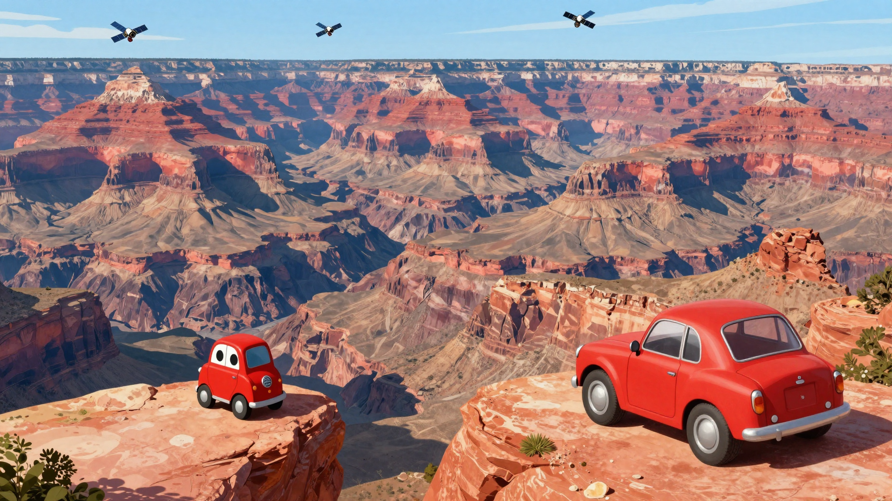
一天，小火爬上了一个高高的山坡，看到了壮观的水手号峡谷！
"哇——这个峡谷好长好深啊！"小火惊叹道，"它比地球上的任何峡谷都要大！"
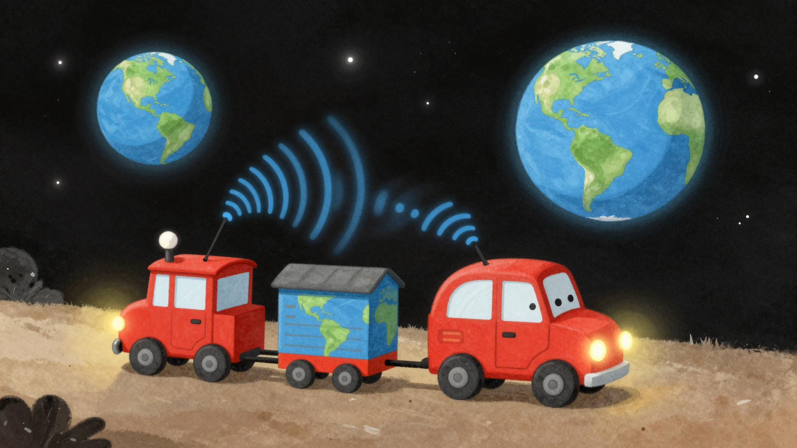
探险任务快结束了，小火要把收集到的信息传回地球。
"滴滴滴——"信号穿过太空，飞向了蓝色的地球。
"妈妈，我做到了！火星真是一个神奇的地方！"
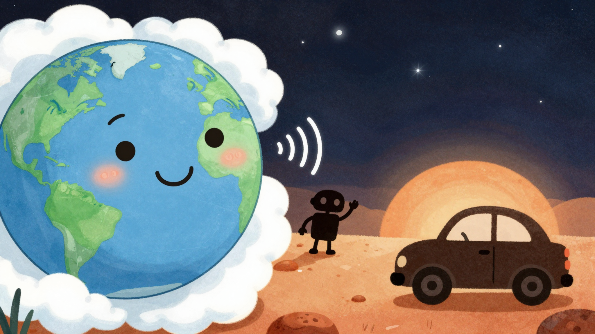
地球妈妈收到了小火的消息，她开心地说：
"你真勇敢，小火！你带回了宝贵的知识。火星虽然寒冷又荒凉，但它藏着很多秘密，等着人类去发现呢！"
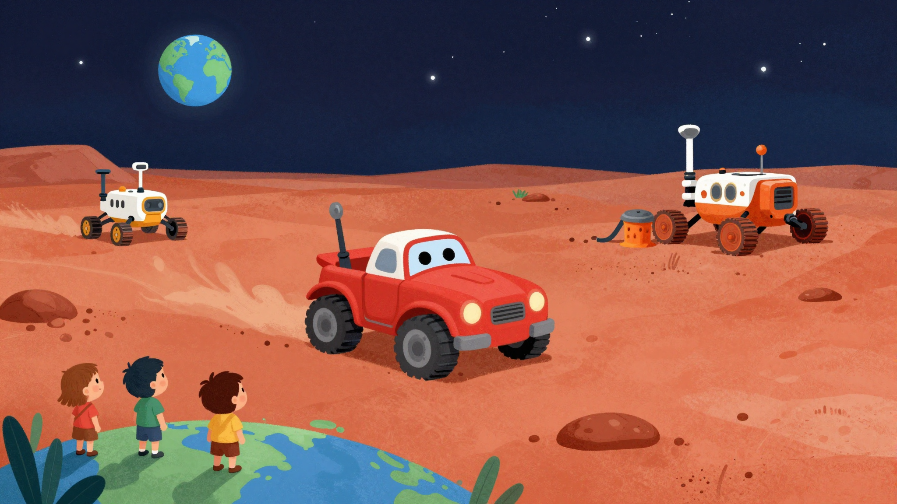
小火继续在火星上探险，它知道，自己不是一个人在战斗。在地球上有好多科学家在关注着它，在火星上还有好多前辈和它一起工作。
"我会继续勇敢地探索，把火星的故事讲给每一个小朋友听！"
谢谢小火的探险故事！
也许有一天，你也能去火星呢！🚀
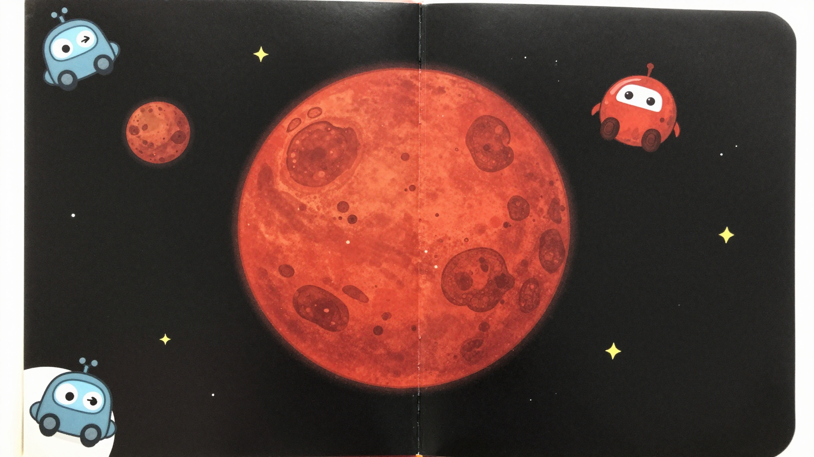